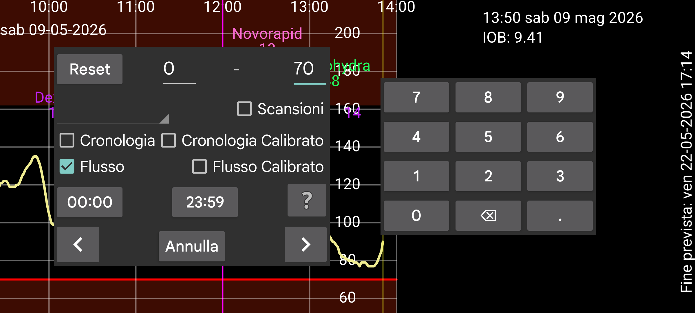

ar be de es fr hi it ja ko nl pl pt ru tr uk uz zh en
Cerca può essere usato per trovare valori del glucosio e numeri inseriti.
Cerchi i valori tra i numeri forniti. Ad esempio: 10 – 999 per cercare valori tra 10 e 999.
I valori del glucosio sono separati in Scansione, Cronologia e Flusso.
Scansione: valore mostrato immediatamente dopo la scansione. Cerca le scansioni grezze.
Cronologia: Cerca i valori grezzi della cronologia. (Misurazioni periodiche salvate sul sensore e trasferite a questa app. I sensori Freestyle Libre 2 salvano ogni 15 minuti un valore e li trasferiscono tramite NFC a questa app. I sensori Freestyle Libre 3 salvano ogni 5 minuti un valore e li trasferiscono tramite Bluetooth.)
Cronologia Calibrata: Cerca i valori della cronologia calibrati.
Flusso: Cerca i valori grezzi del flusso (misurazioni periodiche di 1 minuto inviate tramite Bluetooth dal sensore Freestyle Libre 2 a questa app).
Flusso Calibrato: Cerca i valori del flusso calibrati.
Se hai inserito dati di insulina, cibo o attività, puoi cercarli selezionando l'etichetta corrispondente nello spinner e specificando l'intervallo di numeri di tuo interesse: ad esempio cycling tra 50 e 100.
Puoi anche specificare il orario del giorno a cui sei interessato. Se sei interessato alle ipoglicemie tra le 22:00 della sera e le 07:00 del mattino, premi sul primo display dell'orario (mostrato 00:00 all'inizio) e cambialo in 22:00 e cambia il secondo display dell'orario in 07:00 (Devi anche selezionare Flusso e/o Cronologia e specificare un intervallo di valori da 0 a 3.9 mmol/L (70 mg/dL)).
Toccando una freccia si avvia la ricerca nella direzione indicata.
Reset imposta tutti i valori di ricerca a quelli che erano all'inizio.
In Impostazione sotto etichette numeriche puoi selezionare quale etichetta (ad esempio Carboidrati) è associata ai pasti. Se selezioni questa etichetta in "Nuovo valore" compare un pulsante "Pasto". Dopo averlo toccato, puoi inserire un pasto a partire dai suoi ingredienti. Se selezioni questa etichetta qui nello spinner, in cima allo schermo compare una casella in cui puoi specificare un ingrediente da cercare e opzionalmente la quantità minima di quell'ingrediente.